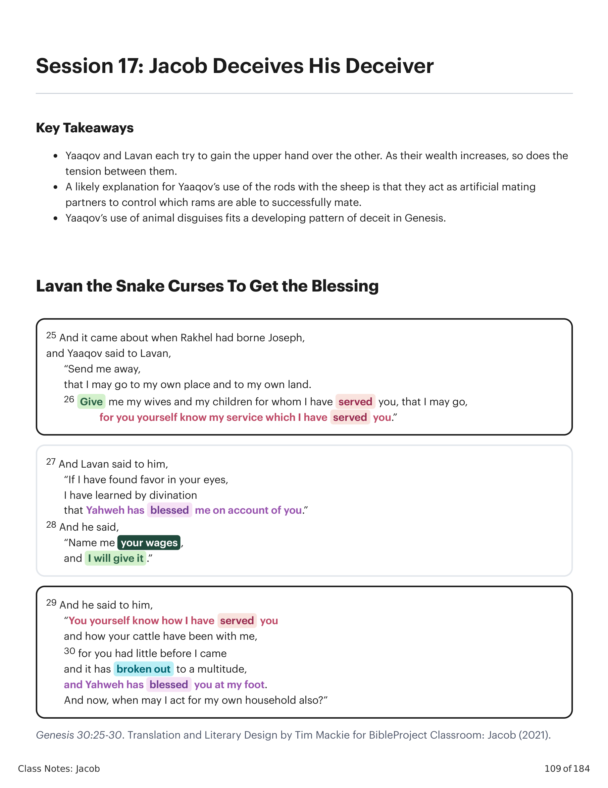
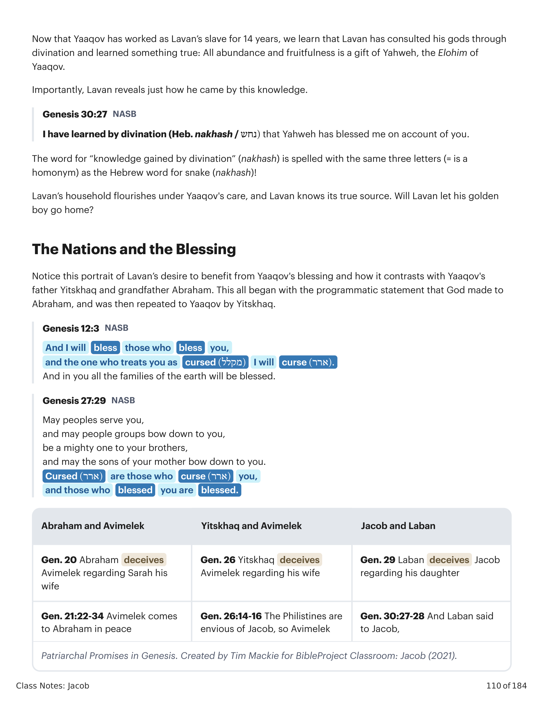
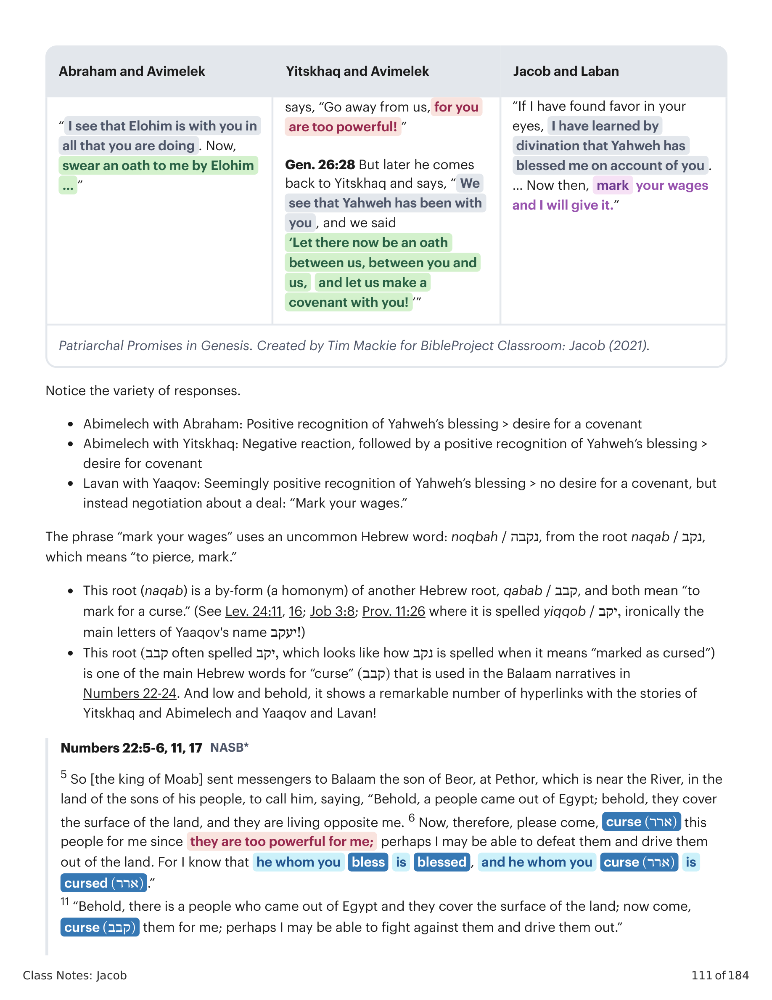
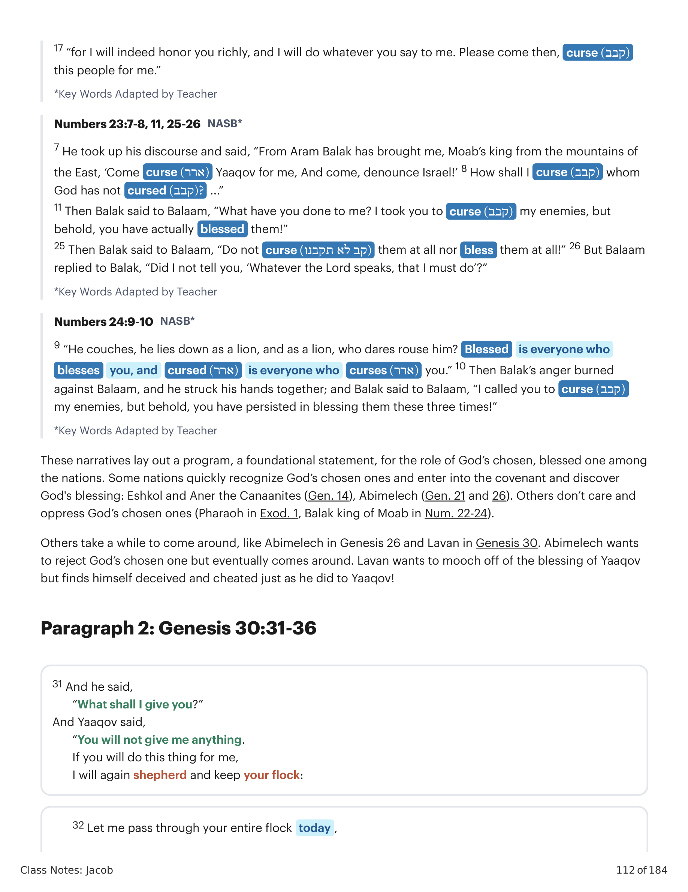
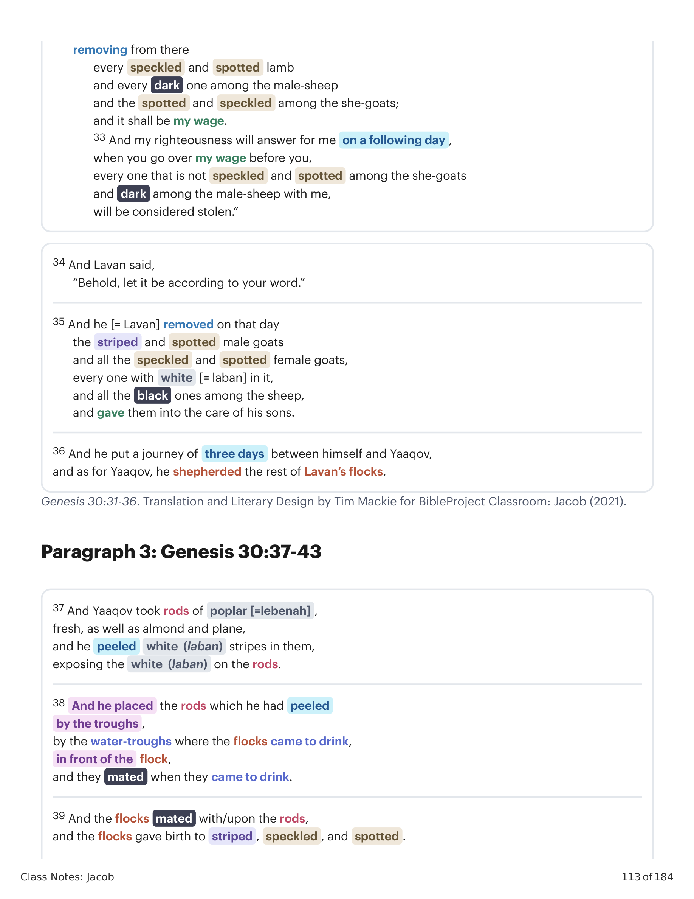
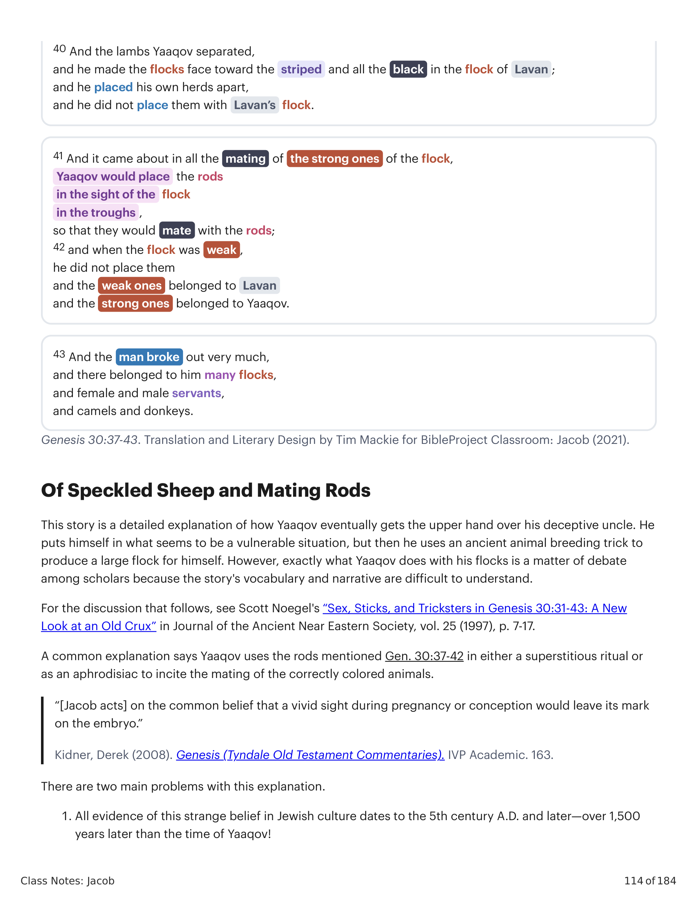
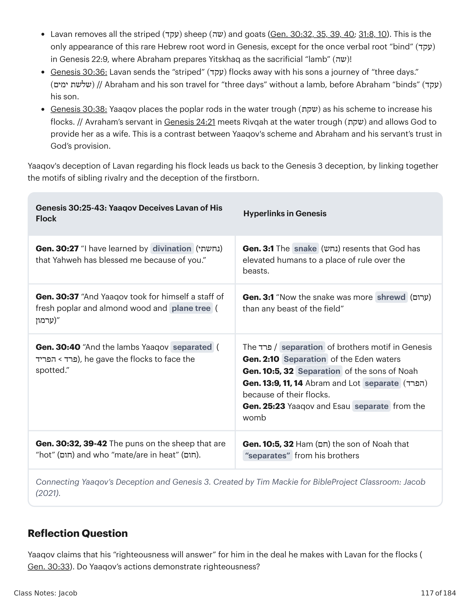

25 E aconteceu que, tendo Rakhel dado à luz José, disse Yaaqov a Lavan: "Deixa-me ir, para que eu volte ao meu lugar e à minha terra. 26 Dá-me minhas mulheres e meus filhos, pelos quais te tenho servido, e deixe-me ir, pois tu mesmo sabes o serviço que te tenho prestado." 27 E Lavan lhe disse: "Se tenho achado graça aos teus olhos, eu tenho aprendido por adivinhação que Yahweh me tem abençoado por causa de ti." 28 E disse: "Marca o teu salário, e eu o darei." 29 E ele lhe disse: "Tu mesmo sabes como te tenho servido, e como o teu gado tem estado comigo. 30 Pois tinhas pouco antes de eu vir, e isso se tem multiplicado numa multidão, e Yahweh te tem abençoado ao meu pé. Ora, quando agirei eu também por minha própria casa?"25 And it came about when Rakhel had borne Joseph, and Yaaqov said to Lavan, "Send me away, that I may go to my own place and to my own land. 26 Give me my wives and my children for whom I have served you, that I may go, for you yourself know my service which I have served you." 27 And Lavan said to him, "If I have found favor in your eyes, I have learned by divination that Yahweh has blessed me on account of you." 28 And he said, "Name me your wages, and I will give it." 29 And he said to him, "You yourself know how I have served you and how your cattle have been with me, 30 for you had little before I came and it has broken out to a multitude, and Yahweh has blessed you at my foot. And now, when may I act for my own household also?"

Gênesis 30:25-30. Tradução e Design Literário por Tim Mackie para BibleProject Classroom: Jacó (2021).Genesis 30:25-30. Translation and Literary Design by Tim Mackie for BibleProject Classroom: Jacob (2021).
Agora que Yaaqov trabalhou como escravo de Lavan por 14 anos, sabemos que Lavan consultou seus deuses por adivinhação e aprendeu algo verdadeiro: toda abundância e frutificação é um dom de Yahweh, o Elohim de Yaaqov. Importante, Lavan revela como chegou a esse conhecimento. A palavra para "conhecimento obtido por adivinhação" (nakhash) é escrita com as mesmas três letras (é um homônimo) da palavra hebraica para serpente (nakhash)! A casa de Lavan floresce sob os cuidados de Yaaqov, e Lavan conhece sua verdadeira fonte. Lavan deixará seu garoto de ouro ir para casa?Now that Yaaqov has worked as Lavan's slave for 14 years, we learn that Lavan has consulted his gods through divination and learned something true: All abundance and fruitfulness is a gift of Yahweh, the Elohim of Yaaqov. Importantly, Lavan reveals just how he came by this knowledge. The word for "knowledge gained by divination" (nakhash) is spelled with the same three letters (= is a homonym) as the Hebrew word for snake (nakhash)! Lavan's household flourishes under Yaaqov's care, and Lavan knows its true source. Will Lavan let his golden boy go home?

Promessas Patriarcais em Gênesis. Criado por Tim Mackie para BibleProject Classroom: Jacó (2021).Patriarchal Promises in Genesis. Created by Tim Mackie for BibleProject Classroom: Jacob (2021).
Observe a variedade de respostas. Abimeleque com Abraão: reconhecimento positivo da bênção de Yahweh > desejo de aliança. Abimeleque com Yitskhaq: reação negativa, seguida de reconhecimento positivo da bênção de Yahweh > desejo de aliança. Lavan com Yaaqov: reconhecimento aparentemente positivo da bênção de Yahweh > nenhum desejo de aliança, mas em vez disso negociação sobre um acordo: "Marca o teu salário." A frase "marca o teu salário" usa uma palavra hebraica incomum: noqbah, da raiz naqab, que significa "furar, marcar". Esta raiz (naqab) é um duplo (um homônimo) de outra raiz hebraica, qabab, e ambas significam "marcar para maldição". Esta raiz qabab é uma das principais palavras hebraicas para "maldição" usada nas narrativas de Balaão em Números 22-24.Notice the variety of responses. Abimelech with Abraham: Positive recognition of Yahweh's blessing > desire for a covenant. Abimelech with Yitskhaq: Negative reaction, followed by a positive recognition of Yahweh's blessing > desire for covenant. Lavan with Yaaqov: Seemingly positive recognition of Yahweh's blessing > no desire for a covenant, but instead negotiation about a deal: "Mark your wages." The phrase "mark your wages" uses an uncommon Hebrew word: noqbah, from the root naqab, which means "to pierce, mark." This root (naqab) is a by-form (a homonym) of another Hebrew root, qabab, and both mean "to mark for a curse." This root qabab is one of the main Hebrew words for "curse" that is used in the Balaam narratives in Numbers 22-24.

Promessas Patriarcais em Gênesis. Criado por Tim Mackie para BibleProject Classroom: Jacó (2021).Patriarchal Promises in Genesis. Created by Tim Mackie for BibleProject Classroom: Jacob (2021).
Estas narrativas traçam um programa, uma declaração fundamental, para o papel do escolhido de Deus, a pessoa abençoada, entre as nações. Algumas nações reconhecem rapidamente os escolhidos de Deus e entram na aliança e descobrem a bênção de Deus: Eschol e Aner, os cananeus (Gn 14), Abimeleque (Gn 21 e 26). Outras não se importam e oprimem os escolhidos de Deus (Faraó em Êx 1, Balaque rei de Moabe em Nm 22-24). Outras demoram a se convencer, como Abimeleque em Gênesis 26 e Lavan em Gênesis 30. Abimeleque quer rejeitar o escolhido de Deus mas eventualmente se convence. Lavan quer sugar a bênção de Yaaqov mas acaba enganado e trapaceado exatamente como ele fez a Yaaqov!These narratives lay out a program, a foundational statement, for the role of God's chosen, blessed one among the nations. Some nations quickly recognize God's chosen ones and enter into the covenant and discover God's blessing: Eshkol and Aner the Canaanites (Gen. 14), Abimelech (Gen. 21 and 26). Others don't care and oppress God's chosen ones (Pharaoh in Exod. 1, Balak king of Moab in Num. 22-24). Others take a while to come around, like Abimelech in Genesis 26 and Lavan in Genesis 30. Abimelech wants to reject God's chosen one but eventually comes around. Lavan wants to mooch off of the blessing of Yaaqov but finds himself deceived and cheated just as he did to Yaaqov!
31 E ele disse: "Que te darei?" E Yaaqov disse: "Não me darás coisa alguma. Se fizerem isto por mim, tornarei a apascentar e guardar o teu rebanho: 32 Deixa passar hoje por todo o teu rebanho, removendo dele todo cordeiro malhado e salpicado, e todo escuro dentre os carneiros, e o salpicado e malhado dentre as cabras; e isto será o meu salário. 33 E a minha justiça responderá por mim no dia seguinte, quando fores ver o meu salário diante de ti; todo o que não for malhado e salpicado dentre as cabras, e escuro dentre os carneiros, comigo será considerado roubo." 34 E Lavan disse: "Eis que seja conforme a tua palavra." 35 E ele [= Lavan] removeu naquele dia os bodes listrados e salpicados, e todas as cabras malhadas e salpicadas, toda a que tinha branco nela, e todos os negros dentre as ovelhas, e deu-os ao cuidado de seus filhos. 36 E pôs a distância de três dias entre si e Yaaqov; e, quanto a Yaaqov, ele apascentava o resto dos rebanhos de Lavan.31 And he said, "What shall I give you?" And Yaaqov said, "You will not give me anything. If you will do this thing for me, I will again shepherd and keep your flock: 32 Let me pass through your entire flock today, removing from there every speckled and spotted lamb and every dark one among the male-sheep and the spotted and speckled among the she-goats; and it shall be my wage. 33 And my righteousness will answer for me on a following day, when you go over my wage before you, every one that is not speckled and spotted among the she-goats and dark among the male-sheep with me, will be considered stolen." 34 And Lavan said, "Behold, let it be according to your word." 35 And he [= Lavan] removed on that day the striped and spotted male goats and all the speckled and spotted female goats, every one with white [= laban] in it, and all the black ones among the sheep, and gave them into the care of his sons. 36 And he put a journey of three days between himself and Yaaqov, and as for Yaaqov, he shepherded the rest of Lavan's flocks.

Gênesis 30:31-36. Tradução e Design Literário por Tim Mackie para BibleProject Classroom: Jacó (2021).Genesis 30:31-36. Translation and Literary Design by Tim Mackie for BibleProject Classroom: Jacob (2021).
37 E Yaaqov tomou varas de choupo, verdes, e de amendoeira e de platano, e nelas descascou listras brancas, descobrindo o branco das varas. 38 E pôs as varas que havia descascado junto às canadas, junto às águas dos bebedouros, onde as ovelhas vinham beber, defronte do rebanho, e se aqueciam quando vinham beber. 39 E as ovelhas se aqueciam sobre as varas, e davam à luz listradas, salpicadas e malhadas. 40 E os cordeiros Yaaqov os separou, e fez o rebanho virar-se para as listradas e todos os negros do rebanho de Lavan; e pôs à parte os seus próprios rebanhos, e não os pôs com o rebanho de Lavan. 41 E aconteceu que, em todo o acasalamento dos fortes do rebanho, Yaaqov punha as varas aos olhos do rebanho nas canadas, para que se aquecessem com as varas; 42 mas quando o rebanho era fraco, não as punha; e os fracos eram de Lavan, e os fortes eram de Yaaqov. 43 E o homem se tornou muito próspero, e teve muitos rebanhos, e servas e servos, e camelos e jumentos.37 And Yaaqov took rods of poplar, fresh, as well as almond and plane, and he peeled white stripes in them, exposing the white on the rods. 38 And he placed the rods which he had peeled by the troughs, by the water-troughs where the flocks came to drink, in front of the flock, and they mated when they came to drink. 39 And the flocks mated with/upon the rods, and the flocks gave birth to striped, speckled, and spotted. 40 And the lambs Yaaqov separated, and he made the flocks face toward the striped and all the black in the flock of Lavan; and he placed his own herds apart, and he did not place them with Lavan's flock. 41 And it came about in all the mating of the strong ones of the flock, Yaaqov would place the rods in the sight of the flock in the troughs, so that they would mate with the rods; 42 and when the flock was weak, he did not place them and the weak ones belonged to Lavan and the strong ones belonged to Yaaqov. 43 And the man broke out very much, and there belonged to him many flocks, and female and male servants, and camels and donkeys.

Gênesis 30:37-43. Tradução e Design Literário por Tim Mackie para BibleProject Classroom: Jacó (2021).Genesis 30:37-43. Translation and Literary Design by Tim Mackie for BibleProject Classroom: Jacob (2021).
Esta história é uma explicação detalhada de como Yaaqov finalmente leva vantagem sobre seu tio enganador. Ele se põe numa situação que parece vulnerável, mas então usa um truque antigo de criação de animais para produzir um grande rebanho para si. Exatamente o que Yaaqov faz com seus rebanhos é motivo de debate entre os estudiosos, pois o vocabulário e a narrativa da história são difíceis de entender. Uma explicação comum diz que Yaaqov usa as varas mencionadas em Gn 30:37-42 num ritual supersticioso ou como um afrodisíaco para incitar o acasalamento dos animais da cor correta. Há dois problemas principais com essa explicação: 1. Toda a evidência desse estranho costume na cultura judaica data do século V d.C. e depois — mais de 1.500 anos depois da época de Yaaqov! 2. Se as varas fossem algum tipo de afrodisíaco, isso não explica por que ele as coloca quando os "fortes" do rebanho de Lavan estavam acasalando. A explicação mais provável diz que as varas eram colocadas como "falsos parceiros de acasalamento". Gênesis 30:39 diz em hebraico que "o rebanho se aqueceu contra/sobre as varas". Ora, Yaaqov permite que apenas os animais que ele não queria procriar "se aqueceram sobre as varas". Criadores de animais frequentemente empregam dispositivos artificiais de acasalamento junto com "animais provocadores", isto é, machos introduzidos no rebanho para induzir as fêmeas a um cio precoce. Esta é precisamente a prática que Yaaqov explora em Gn 30:39-41.This story is a detailed explanation of how Yaaqov eventually gets the upper hand over his deceptive uncle. He puts himself in what seems to be a vulnerable situation, but then he uses an ancient animal breeding trick to produce a large flock for himself. However, exactly what Yaaqov does with his flocks is a matter of debate among scholars because the story's vocabulary and narrative are difficult to understand. A common explanation says Yaaqov uses the rods mentioned Gen. 30:37-42 in either a superstitious ritual or as an aphrodisiac to incite the mating of the correctly colored animals. There are two main problems with this explanation: 1. All evidence of this strange belief in Jewish culture dates to the 5th century A.D. and later—over 1,500 years later than the time of Yaaqov! 2. If the sticks were some kind of aphrodisiac, this does not explain why he places the rods out when the "strong ones" of Lavan's flock were mating (30:41-42). The more likely explanation says the sticks were placed as "false mating partners." Genesis 30:39 says in Hebrew that "the flock mated against/upon the rods." Like Jacob in Gen. 30:40, animal breeders often employ artificial mating devices along with "teaser animals," i.e., males introduced into the flock to induce the females into early heat. This practice is precisely what Jacob exploits in Gen. 30:39-41.

Gênesis 30:37-43. Tradução e Design Literário por Tim Mackie para BibleProject Classroom: Jacó (2021).Genesis 30:37-43. Translation and Literary Design by Tim Mackie for BibleProject Classroom: Jacob (2021).
Conclusão: Yaaqov usa uma técnica sutil e enganosa para garantir que seus próprios animais se multipliquem enquanto os de Lavan diminuem lentamente. O uso de "disfarces de animais" e talvez até de "cabelo ondulante" por Yaaqov se encaixa num motivo maior no rolo de Gênesis, onde personagens usam "enganos de animais" para realizar seus planos: a pele de animal usada por Yaaqov para personificar Esaú (Gn 27:16); o sangue de cabra esfregado no manto pelos irmãos de José (Gn 37:31); Tamar, que faz Judá prometer-lhe um cabrito para resgatar a linhagem prometida dormindo com seu sogro (Gn 38:17, 23). As "varas de acasalamento" de Yaaqov também se conectam às "madrágoras" de Leah na unidade literária anterior. Ambas são "itens férteis de ironia." O engano de Lavan a Yaaqov e o contra-engano de Yaaqov visando adquirir muitos cabritos e ovelhas contrastam com Abraão, que confiou em Yahweh para prover o "cordeiro" como substituto na 'aqedah de Gênesis 22.Conclusion: Yaaqov uses a subtle, deceptive technique to make sure his own animals multiply while Lavan's slowly dwindle. Yaaqov's use of "animal disguises" and perhaps even "flowing hair" fits into a larger motif in the Genesis scroll, where characters use "animal deceptions" to accomplish their plans: the animal skin used by Yaaqov to impersonate Esau (Gen. 27:16); the goat's blood smeared on the coat by Joseph's brothers (Gen. 37:31); Tamar, who gets Judah to promise her a young goat so she can rescue the promised lineage by sleeping with her father-in-law (Gen. 38:17, 23). Yaaqov's "mating rods" also connect to Leah's "mandrakes" in the previous literary unit. Both are "fertile items of irony." Lavan's deception of Yaaqov and Yaaqov's counter-deception aimed at acquiring many goats and sheep stand in contrast to Abraham, who trusted Yahweh to provide the "lamb" as a substitute in the 'aqedah of Genesis 22.

Conectando o Engano de Yaaqov e Gênesis 3. Criado por Tim Mackie para BibleProject Classroom: Jacó (2021).Connecting Yaaqov's Deception and Genesis 3. Created by Tim Mackie for BibleProject Classroom: Jacob (2021).
O engano de Yaaqov a Lavan quanto ao seu rebanho nos remete ao engano de Gênesis 3, ligando os motivos de rivalidade fraternal e engano do primogênito. Lavan remove todos os "listrados" (aqad) ovelhas e cabras. Esta é a única aparição desta rara raiz hebraica em Gênesis, exceto pela raiz verbal "atar/ligar" (aqad) em Gênesis 22:9, onde Abraão prepara Yitskhaq como o "cordeiro" sacrificial! Gênesis 30:36: Lavan envia os rebanhos "listrados" com seus filhos a uma jornada de "três dias" // Abraão e seu filho viajam por "três dias" sem um cordeiro, antes que Abraão "ata" seu filho. Gênesis 30:38: Yaaqov põe as varas de choupo na "canada" (shoqet) como seu esquema para aumentar seus rebanhos // o servo de Avraham em Gênesis 24:21 encontra Rivqah na "canada" e permite que Deus a provê como esposa. Este é um contraste entre o esquema de Yaaqov e a confiança de Abraão e seu servo na provisão de Deus.Yaaqov's deception of Lavan regarding his flock leads us back to the Genesis 3 deception, by linking together the motifs of sibling rivalry and the deception of the firstborn. Lavan removes all the striped (aqad) sheep and goats. This is the only appearance of this rare Hebrew root word in Genesis, except for the once verbal root "bind" (aqad) in Genesis 22:9, where Abraham prepares Yitskhaq as the sacrificial "lamb"! Genesis 30:36: Lavan sends the "striped" flocks away with his sons a journey of "three days." Abraham and his son travel for "three days" without a lamb, before Abraham "binds" his son. Genesis 30:38: Yaaqov places the poplar rods in the water trough (shoqet) as his scheme to increase his flocks. // Avraham's servant in Genesis 24:21 meets Rivqah at the water trough and allows God to provide her as a wife. This is a contrast between Yaaqov's scheme and Abraham and his servant's trust in God's provision.
Yaaqov afirma que sua "justiça responderá" por ele no acordo que faz com Lavan pelos rebanhos (Gn 30:33). As ações de Yaaqov demonstram justiça?Yaaqov claims that his "righteousness will answer" for him in the deal he makes with Lavan for the flocks (Gen. 30:33). Do Yaaqov's actions demonstrate righteousness?